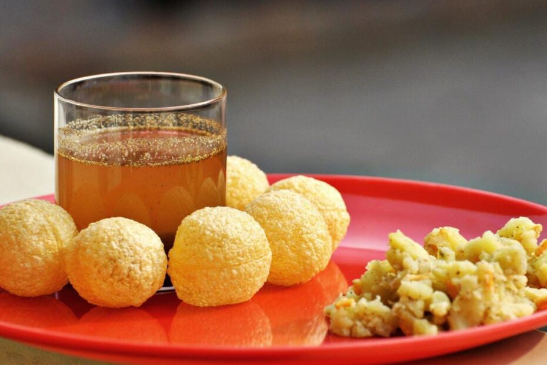
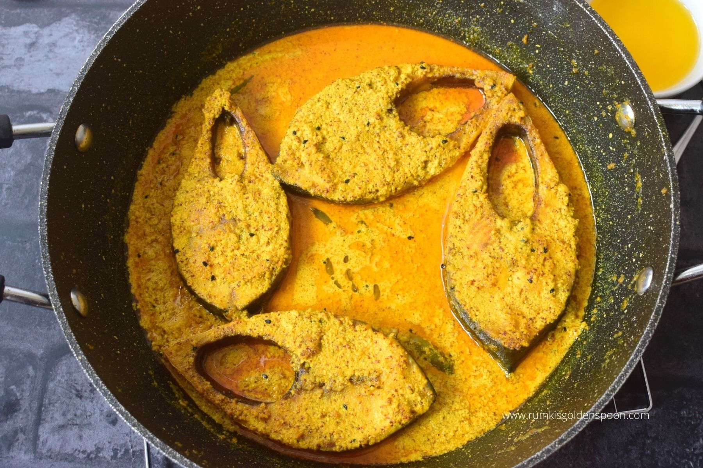
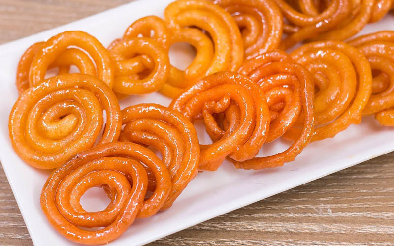

|
Fuchka Fuchka is an integral part of Bengali street-food culture. No hangout is ever complete without an appetizing plate of this delicious Bangladeshi food. Fuchka is a beloved and ubiquitous snack in South Asia, with regional variations in the fillings and dipping sauces used. It is often sold by street vendors or in small snack shops, and is a popular choice for an afternoon or evening snack. It is also considered a social food, as it is often shared and enjoyed with friends and family in a communal setting. Recipe link: Fuchka Recipe |
Shorshe Ilish Shorshe ilish aka ilish shorshe recipe is a pure Bengali delicacy and one of the most popular and beloved hilsa fish recipe which is frequently prepared in every Bengali house. Any reputed Bengali restaurant’s menu card and occasion is incomplete without this mustard piece. Ilish macher shorshe bata is a signature dish which has been filling immense pleasure and comfort in every Bengali’s life since ages. In this preparation, hilsa fish slices are cooked in mustard paste with lot of green chillies and a drizzle of mustard oil. It is always accompanied with hot steamed rice. Recipe link: Shorshe Ilish Recipe |
Jilapi Jilapi, also known as jalebi, is a popular sweet dish that is commonly consumed in South Asia, the Middle East, and North Africa. It is made by deep-frying a wheat flour batter into a coil or pretzel shape, and then soaking it in sugar syrup until it absorbs the syrup and becomes sweet and sticky.Jilapi has a bright orange or yellow color, and its texture is crispy on the outside and chewy on the inside. It is often served as a dessert, particularly during festivals and special occasions. In some regions, it is also served as a breakfast item with milk or yogurt. Jilapi has different variations and names in different parts of the world. Recipe link: Jilapi Recipe |